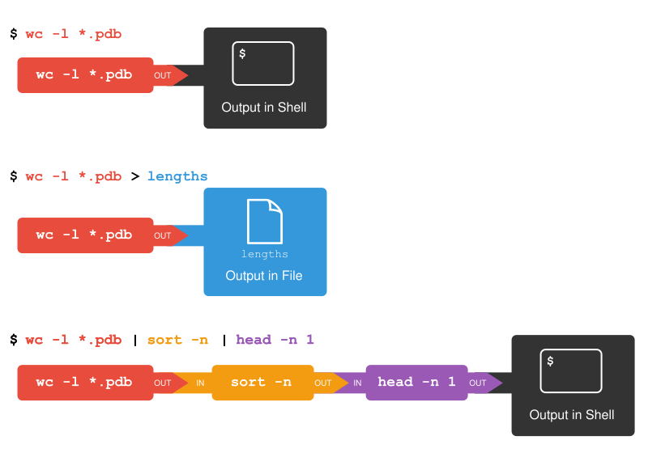

Combining commands
Overview
Teaching: min
Exercises: minQuestions
How can I combine existing commands to do new things?
Objectives
Redirect a command’s output to a file.
Process a file instead of keyboard input using redirection.
Construct command pipelines with two or more stages.
Explain what usually happens if a program or pipeline isn’t given any input to process.
Explain Unix’s ‘small pieces, loosely joined’ philosophy.
Now that we know a few basic commands,
we can finally look at the shell’s most powerful feature:
the ease with which it lets us combine existing programs in new ways.
We’ll start with a directory called molecules
that contains six files describing some simple organic molecules.
The .pdb extension indicates that these files are in Protein Data Bank format,
a simple text format that specifies the type and position of each atom in the molecule.
$ ls molecules
cubane.pdb ethane.pdb methane.pdb
octane.pdb pentane.pdb propane.pdb
Let’s go into that directory with cd and run the command wc *.pdb.
wc is the “word count” command:
it counts the number of lines, words, and characters in files (from left to right, in that order).
The * in *.pdb matches zero or more characters,
so the shell turns *.pdb into a list of all .pdb files in the current directory:
$ cd molecules
$ wc *.pdb
20 156 1158 cubane.pdb
12 84 622 ethane.pdb
9 57 422 methane.pdb
30 246 1828 octane.pdb
21 165 1226 pentane.pdb
15 111 825 propane.pdb
107 819 6081 total
If we run wc -l instead of just wc,
the output shows only the number of lines per file:
$ wc -l *.pdb
20 cubane.pdb
12 ethane.pdb
9 methane.pdb
30 octane.pdb
21 pentane.pdb
15 propane.pdb
107 total
Why Isn’t It Doing Anything?
What happens if a command is supposed to process a file, but we don’t give it a filename? For example, what if we type:
$ wc -lbut don’t type
*.pdb(or anything else) after the command? Since it doesn’t have any filenames,wcassumes it is supposed to process input given at the command prompt, so it just sits there and waits for us to give it some data interactively. From the outside, though, all we see is it sitting there: the command doesn’t appear to do anything.If you make this kind of mistake, you can escape out of this state by holding down the control key (Ctrl) and typing the letter C once and letting go of the Ctrl key. Ctrl+C
We can also use -w to get only the number of words,
or -c to get only the number of characters.
Which of these files contains the fewest lines? It’s an easy question to answer when there are only six files, but what if there were 6000? Our first step toward a solution is to run the command:
$ wc -l *.pdb > lengths.txt
The greater than symbol, >, tells the shell to redirect the command’s output
to a file instead of printing it to the screen. (This is why there is no screen output:
everything that wc would have printed has gone into the
file lengths.txt instead.) The shell will create
the file if it doesn’t exist. If the file exists, it will be
silently overwritten, which may lead to data loss and thus requires
some caution.
ls lengths.txt confirms that the file exists:
$ ls lengths.txt
lengths.txt
We can now send the content of lengths.txt to the screen using cat lengths.txt.
The cat command gets its name from “concatenate” i.e. join together,
and it prints the contents of files one after another.
There’s only one file in this case,
so cat just shows us what it contains:
$ cat lengths.txt
20 cubane.pdb
12 ethane.pdb
9 methane.pdb
30 octane.pdb
21 pentane.pdb
15 propane.pdb
107 total
Output Page by Page
We’ll continue to use
catin this lesson, for convenience and consistency, but it has the disadvantage that it always dumps the whole file onto your screen. More useful in practice is the commandless, which you use withless lengths.txt. This displays a screenful of the file, and then stops. You can go forward one screenful by pressing the spacebar, or back one by pressingb. Pressqto quit.
Now let’s use the sort command to sort its contents.
What Does
sort -nDo?If we run
sorton a file containing the following lines:10 2 19 22 6the output is:
10 19 2 22 6If we run
sort -non the same input, we get this instead:2 6 10 19 22Explain why
-nhas this effect.Solution
The
-noption specifies a numerical rather than an alphanumerical sort.
We will also use the -n option to specify that the sort is
numerical instead of alphanumerical.
This does not change the file;
instead, it sends the sorted result to the screen:
$ sort -n lengths.txt
9 methane.pdb
12 ethane.pdb
15 propane.pdb
20 cubane.pdb
21 pentane.pdb
30 octane.pdb
107 total
We can put the sorted list of lines in another temporary file called sorted-lengths.txt
by putting > sorted-lengths.txt after the command,
just as we used > lengths.txt to put the output of wc into lengths.txt.
Once we’ve done that,
we can run another command called head to get the first few lines in sorted-lengths.txt:
$ sort -n lengths.txt > sorted-lengths.txt
$ head -n 1 sorted-lengths.txt
9 methane.pdb
Using -n 1 with head tells it that
we only want the first line of the file;
-n 20 would get the first 20,
and so on.
Since sorted-lengths.txt contains the lengths of our files ordered from least to greatest,
the output of head must be the file with the fewest lines.
Redirecting to the same file
It’s a very bad idea to try redirecting the output of a command that operates on a file to the same file. For example:
$ sort -n lengths.txt > lengths.txtDoing something like this may give you incorrect results and/or delete the contents of
lengths.txt.
What Does
>>Mean?We have seen the use of
>, but there is a similar operator>>which works slightly differently. We’ll learn about the differences between these two operators by printing some strings. We can use theechocommand to print strings e.g.$ echo The echo command prints textThe echo command prints textNow test the commands below to reveal the difference between the two operators:
$ echo hello > testfile01.txtand:
$ echo hello >> testfile02.txtHint: Try executing each command twice in a row and then examining the output files.
Solution
In the first example with
>, the string “hello” is written totestfile01.txt, but the file gets overwritten each time we run the command.We see from the second example that the
>>operator also writes “hello” to a file (in this casetestfile02.txt), but appends the string to the file if it already exists (i.e. when we run it for the second time).
Appending Data
We have already met the
headcommand, which prints lines from the start of a file.tailis similar, but prints lines from the end of a file instead.Consider the file
data-shell/data/animals.txt. After these commands, select the answer that corresponds to the fileanimals-subset.txt:$ head -n 3 animals.txt > animals-subset.txt $ tail -n 2 animals.txt >> animals-subset.txt
- The first three lines of
animals.txt- The last two lines of
animals.txt- The first three lines and the last two lines of
animals.txt- The second and third lines of
animals.txtSolution
Option 3 is correct. For option 1 to be correct we would only run the
headcommand. For option 2 to be correct we would only run thetailcommand. For option 4 to be correct we would have to pipe the output ofheadintotail -n 2by doinghead -n 3 animals.txt | tail -n 2 > animals-subset.txt
If you think this is confusing,
you’re in good company:
even once you understand what wc, sort, and head do,
all those intermediate files make it hard to follow what’s going on.
We can make it easier to understand by running sort and head together:
$ sort -n lengths.txt | head -n 1
9 methane.pdb
The vertical bar, |, between the two commands is called a pipe.
It tells the shell that we want to use
the output of the command on the left
as the input to the command on the right.
Nothing prevents us from chaining pipes consecutively.
That is, we can for example send the output of wc directly to sort,
and then the resulting output to head.
Thus we first use a pipe to send the output of wc to sort:
$ wc -l *.pdb | sort -n
9 methane.pdb
12 ethane.pdb
15 propane.pdb
20 cubane.pdb
21 pentane.pdb
30 octane.pdb
107 total
And now we send the output of this pipe, through another pipe, to head, so that the full pipeline becomes:
$ wc -l *.pdb | sort -n | head -n 1
9 methane.pdb
This is exactly like a mathematician nesting functions like log(3x)
and saying “the log of three times x”.
In our case,
the calculation is “head of sort of line count of *.pdb”.
The redirection and pipes used in the last few commands are illustrated below:

Piping Commands Together
In our current directory, we want to find the 3 files which have the least number of lines. Which command listed below would work?
wc -l * > sort -n > head -n 3wc -l * | sort -n | head -n 1-3wc -l * | head -n 3 | sort -nwc -l * | sort -n | head -n 3Solution
Option 4 is the solution. The pipe character
|is used to connect the output from one command to the input of another.>is used to redirect standard output to a file. Try it in thedata-shell/moleculesdirectory!
An example pipeline: Checking Files
There are 17 files from an assay in the
~/Desktop/data-shell/north-pacific-gyre/2012-07-03directory Suppose you want to do some quick sanity checks on the content of the files. You know that files > are supposed to have 300 lines.Starting by moving to that directory,
- How would you check if there are any files with fewer than 300 lines in the directory?
- How would you check if there are any files with more than 300 lines in the directory?
Solution
wc -l *.txt | sort -n | head -n 5. You can report the number of lines of all the text files in the directory, sort them, and then get the top (if any files have fewer than 300 lines they will appear here).wc -l *.txt | sort -n -r | head -n 5. Same as above but now we want to sort the files in reverse order.
This idea of linking programs together is why Unix has been so successful.
Instead of creating enormous programs that try to do many different things,
Unix programmers focus on creating lots of simple tools that each do one job well,
and that work well with each other.
This programming model is called “pipes and filters”.
We’ve already seen pipes;
a filter is a program like wc or sort
that transforms a stream of input into a stream of output.
Almost all of the standard Unix tools can work this way:
unless told to do otherwise,
they read from standard input,
do something with what they’ve read,
and write to standard output.
The key is that any program that reads lines of text from standard input and writes lines of text to standard output can be combined with every other program that behaves this way as well. You can and should write your programs this way so that you and other people can put those programs into pipes to multiply their power.
Pipe Reading Comprehension
A file called
animals.txt(in thedata-shell/datafolder) contains the following data:2012-11-05,deer 2012-11-05,rabbit 2012-11-05,raccoon 2012-11-06,rabbit 2012-11-06,deer 2012-11-06,fox 2012-11-07,rabbit 2012-11-07,bearWhat text passes through each of the pipes and the final redirect in the pipeline below?
$ cat animals.txt | head -n 5 | tail -n 3 | sort -r > final.txtHint: build the pipeline up one command at a time to test your understanding
Solution
The
headcommand extracts the first 5 lines fromanimals.txt. Then, the last 3 lines are extracted from the previous 5 by using thetailcommand. With thesort -rcommand those 3 lines are sorted in reverse order and finally, the output is redirected to a filefinal.txt. The content of this file can be checked by executingcat final.txt. The file should contain the following lines:2012-11-06,rabbit 2012-11-06,deer 2012-11-05,raccoon
Pipe Construction
For the file
animals.txtfrom the previous exercise, consider the following command:$ cut -d , -f 2 animals.txtThe
cutcommand is used to remove or “cut out” certain sections of each line in the file. The optional-dflag is used to define the delimiter. A delimiter is a character that is used to separate each line of text into columns. The default delimiter is Tab, meaning that thecutcommand will automatically assume that values in different columns will be separated by a tab. The-fflag is used to specify the field (column) to cut out. The command above uses the-doption to split each line by comma, and the-foption to print the second field in each line, to give the following output:deer rabbit raccoon rabbit deer fox rabbit bearThe
uniqcommand filters out adjacent matching lines in a file. How could you extend this pipeline (usinguniqand another command) to find out what animals the file contains (without any duplicates in their names)?Solution
$ cut -d , -f 2 animals.txt | sort | uniq
Awk: a more powerful tool for text processing
We have seen the
cutcommand that allows the selection of columns in tabular data. If you need more powerful manipulation of tabular data you can use the commandawk, which permits more powerful operations (selection, calculations etc.) on columns. For more complex operations, however, we recommend going to your favourite programming language!
Which Pipe?
The file
animals.txtcontains 8 lines of data formatted as follows:2012-11-05,deer 2012-11-05,rabbit 2012-11-05,raccoon 2012-11-06,rabbit ...The
uniqcommand has a-coption which gives a count of the number of times a line occurs in its input. Assuming your current directory isdata-shell/data/, what command would you use to produce a table that shows the total count of each type of animal in the file?
sort animals.txt | uniq -csort -t, -k2,2 animals.txt | uniq -ccut -d, -f 2 animals.txt | uniq -ccut -d, -f 2 animals.txt | sort | uniq -ccut -d, -f 2 animals.txt | sort | uniq -c | wc -lSolution
Option 4. is the correct answer. If you have difficulty understanding why, try running the commands, or sub-sections of the pipelines (make sure you are in the
data-shell/datadirectory).
Filtering by patterns
grepis another command that searches for patterns in text. Patterns could be simple text or a combination of text and the wildcard characters we have seen before like ? and *. Like > other commands we have seengrepcan be used on multiple files. For example if we wanted to find all occurences of name in all the text files we could write:$ grep "name" *.txtUsing the
animals.txtfile suppose we wanted to copy all the rabbit dates to a separate filerabbit-dates.txt. Which combination of commands would achieve this?Solution
grep “rabbit” animals.txt | cut -d, -f 1 > rabbit-dates.txt
Key Points
catdisplays the contents of its inputs.
headdisplays the first 10 lines of its input.
taildisplays the last 10 lines of its input.
sortsorts its inputs.
wccounts lines, words, and characters in its inputs.
command > fileredirects a command’s output to a file (overwriting any existing content).
command >> fileappends a command’s output to a file.
<operator redirects input to a command
first | secondis a pipeline: the output of the first command is used as the input to the second.The best way to use the shell is to use pipes to combine simple single-purpose programs (filters).